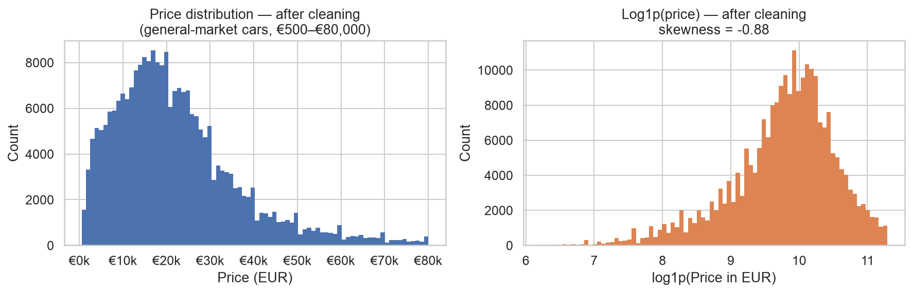
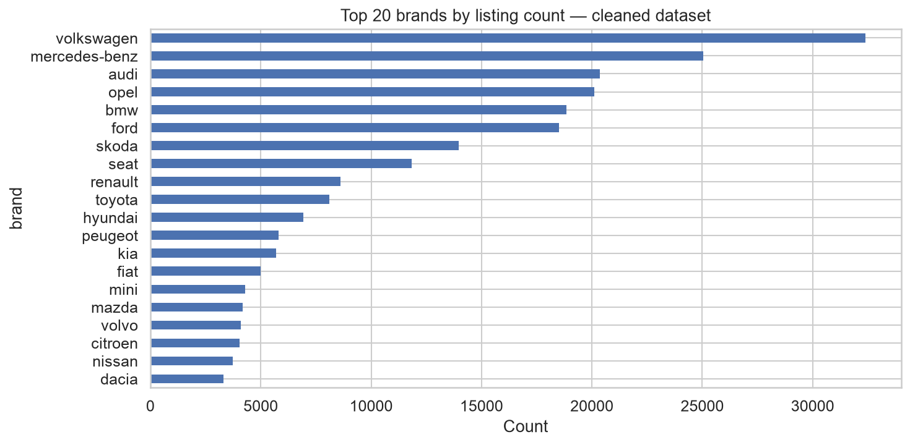
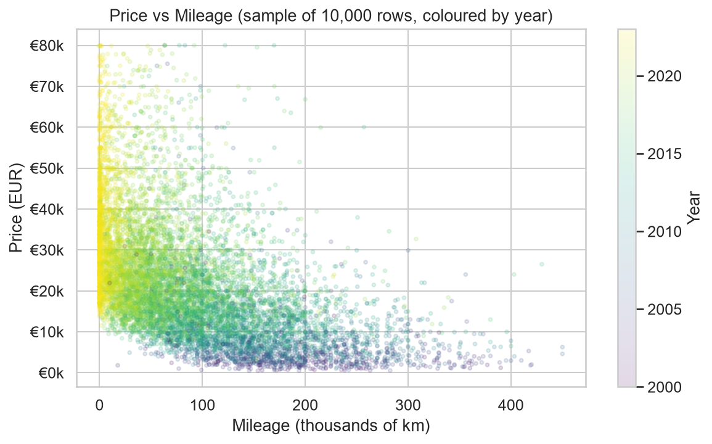
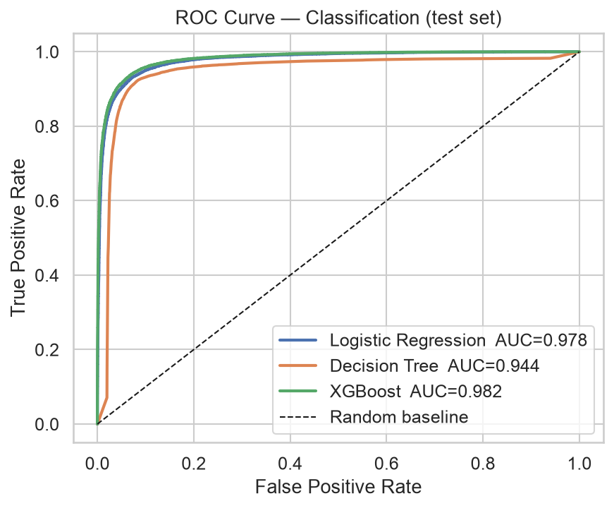
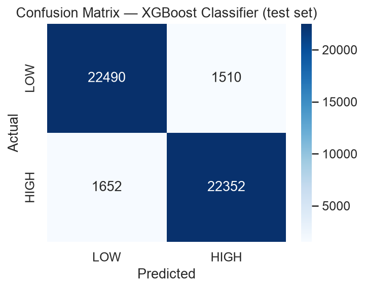
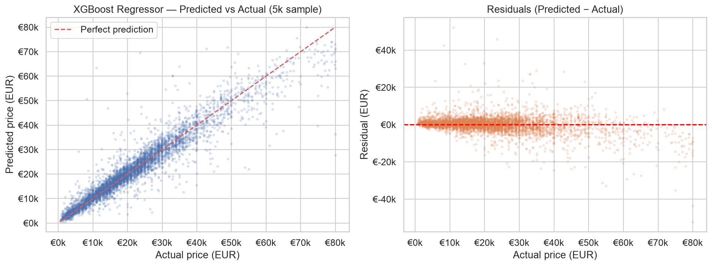
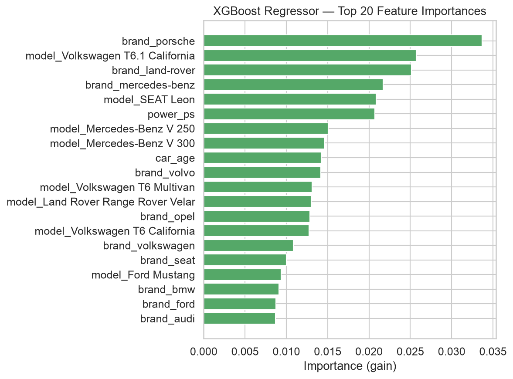

End-to-End Machine Learning Analysis
2026-07-02
Problem: Used-car pricing is opaque — buyers and sellers struggle to know if a listing is fairly priced.
Solution: Train ML models on 240,000 real AutoScout24 listings to answer two questions:
Classification
Is this car in the HIGH or LOW price segment?
Threshold: €19,486 (training median only)
Regression
What is the expected listing price in euros?
Target: raw price_in_euro
Source: AutoScout24 Germany 2023 — scraped listings from Kaggle
| Property | Value |
|---|---|
| Raw rows | 251,079 |
| After cleaning | 240,017 (95.6% retained) |
| Training set | 192,013 rows (80%) |
| Test set | 48,004 rows (20%) |
| Features (raw) | 8 |
| Features after encoding | 559 |
4 categorical + 4 numeric → one-hot encoded to 559 model inputs
All filters applied one at a time — each step operates on already-filtered rows:
| Step | Rule | Removed |
|---|---|---|
| 1 | Drop rows missing price / power / mileage | ~390 |
| 2 | Drop corrupted fuel_type entries | 88 |
| 3 | Drop transmission_type == "Unknown" |
1,134 |
| 4 | Year ≥ 2000 (no classic cars) | 1,924 |
| 5 | Price ≥ €500 (no scrap/data errors) | 77 |
| 6 | Price ≤ €80,000 (no ultra-luxury) | 7,078 |
| 7–8 | Mileage 1–500,000 km | ~460 |
| 9–10 | Power 40–800 PS | 64 |
| 11–12 | Drop 5 redundant/low-quality columns | — |
Result: 251,079 → 240,017 rows · No target leakage

After cleaning: concentrated €500–€80,000 · median €19,488 · skewness ≈ 1.2

Volkswagen dominates (32k listings) followed by Mercedes-Benz, Audi, Opel, BMW

Clear negative relationship — higher mileage → lower price (strong predictor)
Raw year was replaced by two engineered features:
car_age = 2023 − year
mileage_per_year = mileage_in_km / max(car_age, 1)
max(car_age, 1) prevents division by zero for 2023 listingsColumnTransformer
├── OneHotEncoder (brand, fuel_type, transmission_type)
├── OneHotEncoder(min_freq=50) ← model column (1,191 unique values)
└── StandardScaler (car_age, power_ps, mileage_in_km, mileage_per_year)
↓
VarianceThreshold(0.0) ← removes constant features (0 removed)
↓
XGBoostClassifier / XGBoostRegressorLeakage prevention:
price_in_euro excluded from classification features entirelyX_train only — never see test set| Model | F1 (macro) | ROC-AUC | Train F1 | Gap |
|---|---|---|---|---|
| Dummy (most_frequent) | 0.333 | 0.500 | 0.333 | 0.000 |
| Logistic Regression | 0.929 | 0.978 | 0.933 | 0.004 |
| Decision Tree (depth=15) | 0.919 | 0.945 | 0.949 | 0.030 |
| XGBoost (tuned) | 0.934 | 0.982 | 0.946 | 0.012 |

XGBoost AUC = 0.982 · Logistic close behind at 0.978

XGBoost on 48,004 held-out cars · very few misclassifications
| Model | R² | MAE (€) | RMSE (€) | Train R² | Gap |
|---|---|---|---|---|---|
| Dummy (mean) | 0.000 | 10,915 | 14,369 | 0.000 | 0.000 |
| Ridge (α=0.1) | 0.841 | 3,761 | 5,726 | 0.841 | 0.000 |
| Decision Tree (depth=15) | 0.856 | 3,279 | 5,452 | 0.911 | 0.055 |
| XGBoost (tuned) | 0.905 | 2,602 | 4,430 | 0.922 | 0.017 |

Predicted vs actual · tight diagonal · some spread at high prices

Car age and brand are the dominant pricing factors
Used-car pricing is fundamentally additive
Dominant pricing factors (from feature importance):
XGBoost captures what Ridge cannot: mileage matters more for cheap cars than expensive ones; age penalty differs by brand
https://germany-used-cars-ml.streamlit.app/
Three interactive features beyond basic prediction:
Why this price?
Rule-based explanation comparing mileage, age, power, and brand against the dataset — with honest “likely” language
Similar cars
Top-8 real listings nearest to your inputs — filtered by model → brand → numeric distance
What if comparison
Configure two cars side by side, predict both, and see the price difference in € and %
In scope:
Out of scope — model may give unreliable predictions for:
| Category | Why |
|---|---|
| Pre-2000 / oldtimers | Age increases value (collector logic) |
| New and dealer-demo cars | MSRP pricing, not depreciation |
| Ultra-luxury (>€80,000) | Brand prestige and rarity dominate |
| Non-German markets | Different taxation, preferences, supply |
| Future prices | Reflects 2023 market; EV transition ongoing |
Note: Model predicts asking price, not negotiated sale price (typically 5–15% lower)
Final model performance on 48,004 held-out test listings:
| Task | Model | Metric | vs Baseline |
|---|---|---|---|
| Classification | XGBoost | F1_macro 0.934 | +0.601 vs dummy (0.333) |
| Regression | XGBoost | R² 0.905 · MAE €2,602 | RMSE ÷ 3.2 vs dummy |
Key takeaways:
Code & data: github.com/anjakadic178-tech/germany-used-cars-ml
Germany Used Cars 2023 · ML Analysis · Anja Kadic